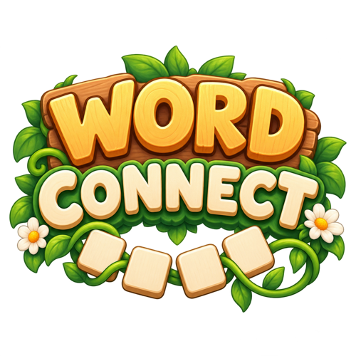

Free · No download · Play in browser
New · Word games
Word Connect OnlinePlay Word Connect online for free — swipe across the letter wheel to connect letters into words, fill in every blank, and watch a garden bloom with each level you finish. No timer, no pressure, no download.
▶ Play nowMore games you might like


How to play Word Connect
Word Connect is a letter puzzle built around one simple move: connect the letters on the wheel to spell a word. Each level gives you a small wheel of four to six letters and a set of blank word slots above it. Press and drag across the letters in order — or swipe with your finger on a phone or tablet — and lift to submit. If your word matches one of the blanks, it slots into place. Fill every blank and the level is complete.
- Look at the wheel. The letters you have are the only letters you can use, and each tile can be used once per word.
- Swipe to spell. Drag from letter to letter to build a word. The path lights up as you go, and you can back up by dragging back over the last tile.
- Fill the blanks. Matching words drop into the slots above the wheel. The number of tiles in each slot tells you how long that word is.
- Collect bonus words. Real words that aren't in the puzzle still count — they go into your bonus jar, and every five different bonus words earns you a free hint.
- Grow your garden. Every level you finish adds something new to the garden scene, and after ten levels the garden is complete.
Controls
| Action | Desktop | Mobile |
|---|---|---|
| Connect letters | Click and drag across the letters, release to submit | Swipe across the letters, lift your finger to submit |
| Shuffle the wheel | Click the Shuffle button | Tap the Shuffle button |
| Use a hint | Click the Hint button | Tap the Hint button |
| Next level | Click the Next level button | Tap the Next level button |
Grow a garden as you play
Most word games show you a number going up. Word Connect shows you a garden. The scene starts as bare soil, and each level you finish plants something new — a stepping stone, a daisy, a tulip, a bush, a sunflower, a little pond, and finally a tree. Finish the fifth level and a hedgehog wanders in to see what you've been growing. Ten levels complete the Backyard Garden. The Butterfly Meadow and the Moon Garden are being planted next, with more levels to come.
Word Connect tips & strategies
- Start with short words. Three- and four-letter words are quick to spot and reveal letters in the longer slots, which makes the big words easier to see.
- Look for the long word first. Every wheel is built around at least one word that uses most or all of the letters. Spotting it early can solve half the level.
- Try common endings. Look for -S, -ED, -ER, -ING and -LY. If you can see a word, check whether adding one of these makes another.
- Use Shuffle. Words are easier to see when the letters are in a different order. Shuffling is free, unlimited, and doesn't change the puzzle.
- Think in pairs. Common letter pairs like TH, CH, SH, ST, and OO can jump-start a word when you're stuck.
- Don't ignore bonus words. Any real word you find counts toward the bonus jar — and every five different ones earn a hint you can save for a hard level.
- Use hints on the last word. When only one slot is left, a hint reveals its first letter, which is usually enough to see the whole thing.
- Take a break. There is no timer, and your progress is saved, so step away and come back — the word you couldn't see often shows up straight away.
Why is Word Connect so relaxing?
There is no clock, no lives, and no penalty for guessing wrong — an invalid swipe just clears and you try again. That makes Word Connect a comfortable word puzzle for a coffee break, a commute, or an evening on the couch. It is closer to solving an anagram than to a race: you have a handful of letters, a few blank words, and all the time you want to find what fits.
What do you learn from playing Word Connect?
Connecting letters into words exercises spelling, vocabulary and pattern recognition. Because every level gives you a small fixed set of letters, you learn to see the words that are hiding inside longer ones — a skill that carries over to anagram puzzles, word searches and other word puzzles. It works for all ages, and the levels start gentle and grow gradually, so beginners can find their footing before the longer words arrive.
Game features at a glance
- Swipe or drag across a wheel of 4 to 6 letters to spell words
- Blank word slots for each level, showing how long each word is
- Bonus words collected in a jar — every 5 different ones earns a free hint
- Free, unlimited Shuffle and a Hint button that reveals the first letter of a word
- A garden that grows with every level — ten hand-checked levels in the Backyard Garden, with more gardens on the way
- A friendly hedgehog visitor who stops by partway through the garden
- No timer, no lives, no energy, and no pop-up interruptions between levels
- Your progress is saved in your browser, so you can pick up where you left off
- Touch and mouse controls, playable on phone, tablet, and desktop
- Runs entirely in your browser — nothing to download or install
About this game
Word Connect Online is an original PlayItNow build, made in-house for instant browser play — no downloads, no sign-up, nothing to install. The levels, the word lists, and all the garden artwork were made specifically for this game. It is the second game in our Word games category, after Hangman, and it is designed for calm, low-pressure play: a puzzle you can pick up for two minutes or twenty.
Word Connect — FAQ
How do you play Word Connect?
Drag or swipe across the letters on the wheel to connect them in order and spell a word, then lift your finger or mouse to submit. If it matches one of the blank word slots, the word fills in. Fill every slot to finish the level.
Can I use the same letter twice in a word?
Only as many times as it appears on the wheel. Each tile can be used once per word, so a wheel with a single E can't make a word with two Es.
Is Word Connect free to play online?
Yes — it's completely free and runs in your browser on PC, Mac, Chromebook, tablets and phones. There is nothing to download and no account to create.
Is there a timer or a limit on how much I can play?
No. There is no timer, no lives or energy system, and no daily limit. Play as many levels as you like, at your own pace.
What are bonus words?
Bonus words are real words you can spell from the wheel that aren't one of the puzzle's blanks. They go into your bonus jar, and every five different bonus words earns you one free hint.
How do hints work?
A hint reveals the first letter of one word you haven't solved yet. You start with two free hints and can earn more by finding bonus words.
What does Shuffle do?
Shuffle rearranges the letters on the wheel. The puzzle stays the same — only the layout changes, which can make new words easier to spot. It is free and unlimited.
What happens if I make a wrong word?
Nothing bad — the word simply clears and you can try again. There are no penalties, no lives to lose and no timer.
What is the garden for?
It is your progress made visible. Every finished level grows something new in the scene, and after ten levels the Backyard Garden is complete. More gardens are on the way.
Is my progress saved?
Yes — your level, garden, hints and bonus jar progress are saved locally in your browser, so they're there next time you visit on the same device and browser.
Do I need to download Word Connect?
No — it runs directly in your web browser, so you can start playing the moment the page loads.
Does it work on phones and tablets?
Yes — the letter wheel is built for touch, with a large, thumb-friendly layout on narrow screens. It also works with a mouse on desktop.
Looking for something else? Browse all games on PlayItNow.